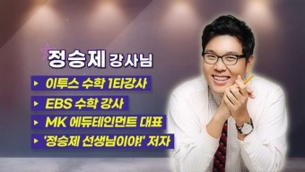

인강 뭐봐야돼?
수학

정승제
EBS의 대표적인 수학강사는 정승제이다.
정승제는 EBS의 수학강사이자 이투스라는 인강사이트의 대표강사이기도 한다.
정승제는 MK 에듀테인먼트의 대표이다. 정승제는 학생 수준에 따라 강의를 하는데,
만약 자신이 수학에 흥미가 없거나 기초가 많이 부족하다면 EBS의 정승제강사를 추천한다.
(정승제강사의 수업 스타일을 알고싶다면 아래 영상을 보세요.)